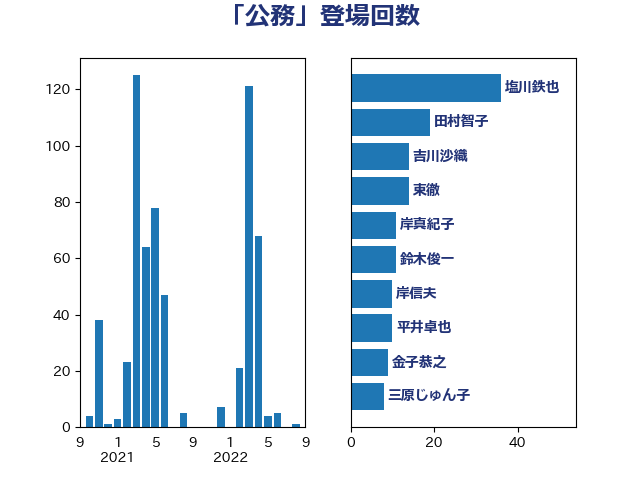

単語「公務」

| 塩川鉄也 | 日本共産党 | 36 回 |
| 田村智子 | 日本共産党 | 19 回 |
| 吉川沙織 | 立憲民主党 | 14 回 |
| 東徹 | 日本維新の会 | 14 回 |
| 岸真紀子 | 立憲民主党 | 11 回 |
| 鈴木俊一 | 自由民主党 | 11 回 |
| 岸信夫 | 自由民主党 | 10 回 |
| 平井卓也 | 自由民主党 | 10 回 |
| 金子恭之 | 自由民主党 | 9 回 |
| 三原じゅん子 | 自由民主党 | 8 回 |
| 塩村あやか | 立憲民主党 | 8 回 |
| 伊藤岳 | 日本共産党 | 7 回 |
| 武田良太 | 自由民主党 | 7 回 |
| 上川陽子 | 自由民主党 | 6 回 |
| 倉林明子 | 日本共産党 | 6 回 |
| 牧島かれん | 自由民主党 | 6 回 |
| 神田憲次 | 自由民主党 | 6 回 |
| 赤羽一嘉 | 公明党 | 6 回 |
| 井上哲士 | 日本共産党 | 5 回 |
| 後藤祐一 | 立憲民主党 | 5 回 |
| 田村貴昭 | 日本共産党 | 5 回 |
| 菅義偉 | 自由民主党 | 5 回 |
| 丸川珠代 | 自由民主党 | 4 回 |
| 本村伸子 | 日本共産党 | 4 回 |
| 森山浩行 | 立憲民主党 | 4 回 |
| 河野太郎 | 自由民主党 | 4 回 |
| 田村憲久 | 自由民主党 | 4 回 |
| 赤嶺政賢 | 日本共産党 | 4 回 |
| 野村哲郎 | 自由民主党 | 4 回 |
| 階猛 | 立憲民主党 | 4 回 |
| 串田誠一 | 日本維新の会 | 3 回 |
| 伊波洋一 | 無所属 | 3 回 |
| 加藤勝信 | 自由民主党 | 3 回 |
| 奥野総一郎 | 立憲民主党 | 3 回 |
| 林芳正 | 自由民主党 | 3 回 |
| 盛山正仁 | 自由民主党 | 3 回 |
| 石川博崇 | 公明党 | 3 回 |
| 石橋通宏 | 立憲民主党 | 3 回 |
| 茂木敏充 | 自由民主党 | 3 回 |
| 音喜多駿 | 日本維新の会 | 3 回 |
| 下野六太 | 公明党 | 2 回 |
| 伊藤孝江 | 公明党 | 2 回 |
| 吉田忠智 | 立憲民主党 | 2 回 |
| 吉田統彦 | 立憲民主党 | 2 回 |
| 宮路拓馬 | 自由民主党 | 2 回 |
| 小山展弘 | 立憲民主党 | 2 回 |
| 小泉進次郎 | 自由民主党 | 2 回 |
| 山岸一生 | 立憲民主党 | 2 回 |
| 川田龍平 | 立憲民主党 | 2 回 |
| 徳永久志 | 立憲民主党 | 2 回 |
| 柴田巧 | 日本維新の会 | 2 回 |
| 森屋隆 | 立憲民主党 | 2 回 |
| 牧山ひろえ | 立憲民主党 | 2 回 |
| 田島麻衣子 | 立憲民主党 | 2 回 |
| 田所嘉徳 | 自由民主党 | 2 回 |
| 石川大我 | 立憲民主党 | 2 回 |
| 福島みずほ | 社会民主党 | 2 回 |
| 藤井比早之 | 自由民主党 | 2 回 |
| 西村智奈美 | 立憲民主党 | 2 回 |
| 高木かおり | 日本維新の会 | 2 回 |
| 高橋千鶴子 | 日本共産党 | 2 回 |
| 鳩山二郎 | 自由民主党 | 2 回 |
| 井坂信彦 | 立憲民主党 | 1 回 |
| 佐藤茂樹 | 公明党 | 1 回 |
| 古賀之士 | 立憲民主党 | 1 回 |
| 古賀友一郎 | 自由民主党 | 1 回 |
| 吉良よし子 | 日本共産党 | 1 回 |
| 國重徹 | 公明党 | 1 回 |
| 小寺裕雄 | 自由民主党 | 1 回 |
| 小林鷹之 | 自由民主党 | 1 回 |
| 小熊慎司 | 立憲民主党 | 1 回 |
| 小田原潔 | 自由民主党 | 1 回 |
| 小野田紀美 | 自由民主党 | 1 回 |
| 山添拓 | 日本共産党 | 1 回 |
| 岩谷良平 | 日本維新の会 | 1 回 |
| 岸田文雄 | 自由民主党 | 1 回 |
| 平木大作 | 公明党 | 1 回 |
| 後藤茂之 | 自由民主党 | 1 回 |
| 斎藤嘉隆 | 立憲民主党 | 1 回 |
| 新垣邦男 | 立憲民主党 | 1 回 |
| 木原誠二 | 自由民主党 | 1 回 |
| 末松信介 | 自由民主党 | 1 回 |
| 柳ヶ瀬裕文 | 日本維新の会 | 1 回 |
| 梶山弘志 | 自由民主党 | 1 回 |
| 渡辺周 | 立憲民主党 | 1 回 |
| 滝沢求 | 自由民主党 | 1 回 |
| 田畑裕明 | 自由民主党 | 1 回 |
| 矢倉克夫 | 公明党 | 1 回 |
| 緑川貴士 | 立憲民主党 | 1 回 |
| 船橋利実 | 自由民主党 | 1 回 |
| 若松謙維 | 公明党 | 1 回 |
| 萩生田光一 | 自由民主党 | 1 回 |
| 西銘恒三郎 | 自由民主党 | 1 回 |
| 近藤昭一 | 立憲民主党 | 1 回 |
| 道下大樹 | 立憲民主党 | 1 回 |
| 遠藤敬 | 日本維新の会 | 1 回 |
| 野上浩太郎 | 自由民主党 | 1 回 |
| 高階恵美子 | 自由民主党 | 1 回 |